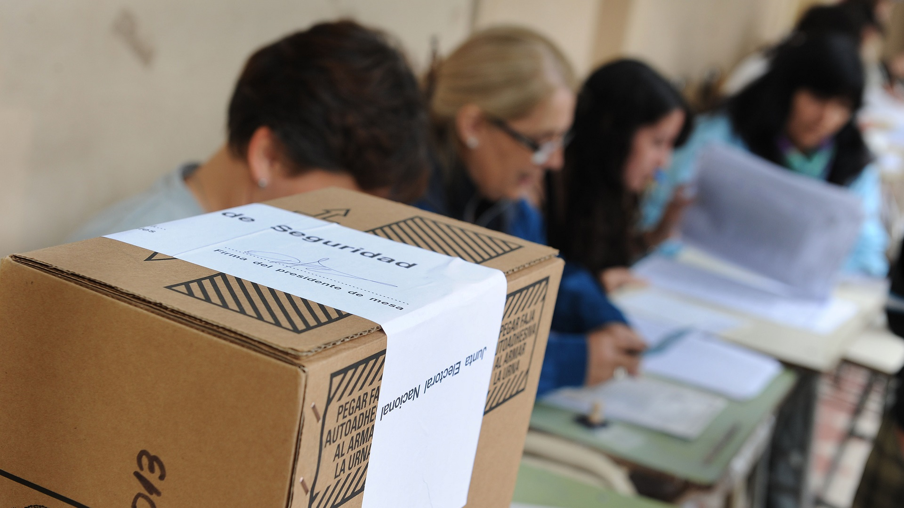

<app-navbar></app-navbar>
<nav *ngIf="userRole === jurado" class="navbar navbar-expand-lg navbar-dark bg-customizado">
  <div class="container">
    <a class="navbar-brand" href="#">Jurado</a>
    <button class="navbar-toggler" type="button" (click)="toggleNavbar()">
      <span class="navbar-toggler-icon"></span>
    </button>
    <div class="collapse navbar-collapse" [ngbCollapse]="isNavbarCollapsed">
      <!-- Left links -->
      <ul class="navbar-nav me-auto d-flex flex-row mt-3 mt-lg-0">
        <li class="nav-item text-center mx-2 mx-lg-1">
          <a class="nav-link active" aria-current="page" [routerLink]="['home']">
            <div>
              <i class="fas fa-home fa-lg mb-1"></i>
            </div>
            Home
          </a>
        </li>
      </ul>

      <!-- Right links -->

    <button class="" type="button" (click)="logout()">
      <ul class="navbar-nav ms-auto d-flex flex-row mt-3 mt-lg-0">
        <li class="nav-item text-center mx-2 mx-lg-1">
          <a class="nav-link active" (click)="logout()">
            <div>
              <i class="fas fa-times-circle"></i>
            </div>
            Cerrar Sesion
          </a>
        </li>
      </ul>
    </button>

      <!-- Right links -->

    </div>
    <!-- Collapsible wrapper -->
  </div>
</nav>
<div class="background">
<div id="carouselExampleIndicators" class="carousel slide" data-bs-ride="carousel">
  <div class="carousel-indicators">
    <button type="button" data-bs-target="#carouselExampleIndicators" data-bs-slide-to="0" class="active" aria-current="true" aria-label="Slide 1"></button>
    <button type="button" data-bs-target="#carouselExampleIndicators" data-bs-slide-to="1" aria-label="Slide 2"></button>
    <button type="button" data-bs-target="#carouselExampleIndicators" data-bs-slide-to="2" aria-label="Slide 3"></button>
  </div>
  <div class="carousel-inner">
    <div class="carousel-item active">
      
    </div>
    <div class="carousel-item">
      
    </div>
    <div class="carousel-item">
      
    </div>
  </div>
  <button class="carousel-control-prev" type="button" data-bs-target="#carouselExampleIndicators" data-bs-slide="prev">
    <span class="carousel-control-prev-icon" aria-hidden="true"></span>
    <span class="visually-hidden">Previous</span>
  </button>
  <button class="carousel-control-next" type="button" data-bs-target="#carouselExampleIndicators" data-bs-slide="next">
    <span class="carousel-control-next-icon" aria-hidden="true"></span>
    <span class="visually-hidden">Next</span>
  </button>
</div>
</div>
